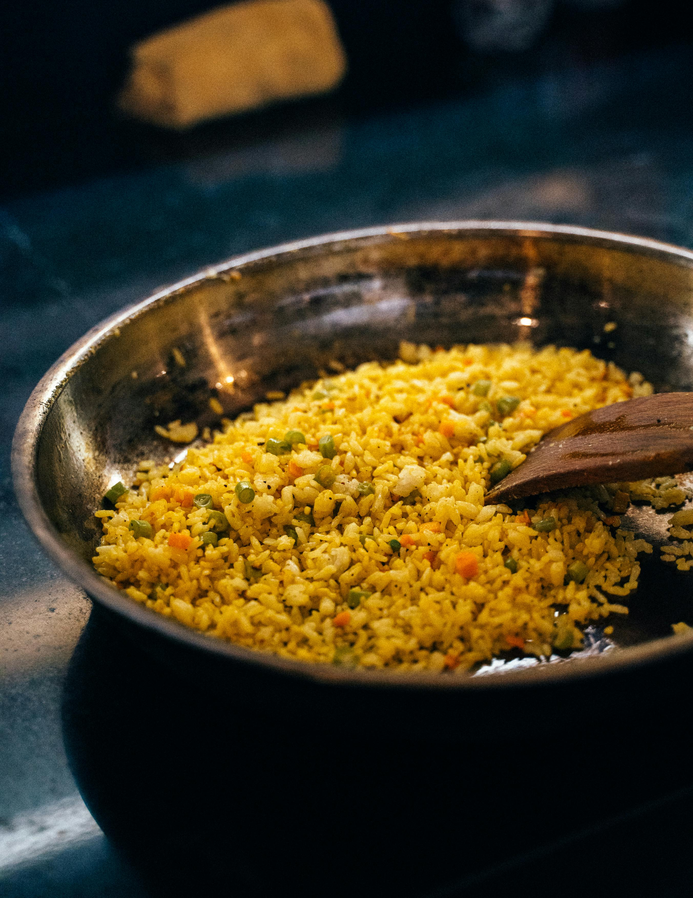

Home
Rice

Description
Rice is a versatile staple food enjoyed around the world. It can be served as a side dish, a main dish, or even in desserts.
This recipe will guide you through cooking perfect fluffy rice every time.
Ingredients
- 1 cup rice
- 2 cups water
- 1 teaspoon salt
- 1 tablespoon butter or oil (optional)
Steps
- Rinse the rice under cold water until the water runs clear.
- Combine rice, water, and salt in a pot.
- Bring to a boil, then reduce heat to low and cover.
- Simmer for 15-20 minutes until water is absorbed.
- Remove from heat and let it rest for 5 minutes before serving.